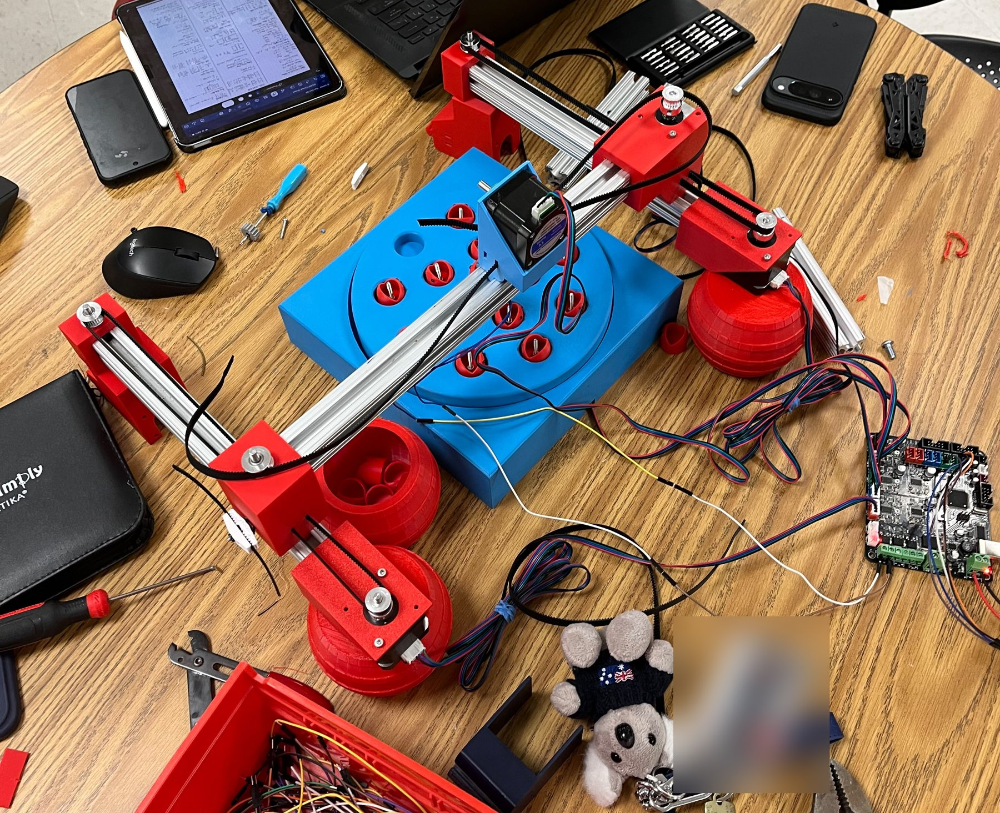
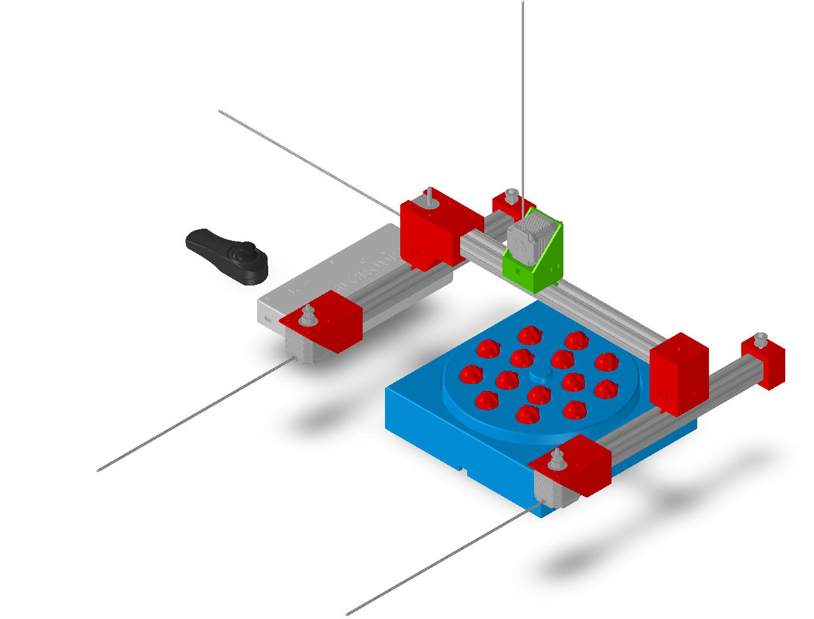

Design & Fabrication
2.5 DoF Carnival Fishing

Project overview
A Joystick-Controlled Carnival Fishing Game.
I designed and built a 2.5-degree-of-freedom gantry that turns the carnival fishing game into a machine: the player steers an electromagnet over a spinning plate of fish with a joystick, then dips it down to catch one.
The gantry moves freely in X and Y, which gives two full degrees of freedom. The third axis, Z, only has two positions, up and down: one press of the joystick lowers the magnet 10 mm, pauses, and lifts it back up. That limited vertical motion is the “half” degree of freedom. A fifth stepper motor spins the plate of fish underneath to make the game harder, and everything runs from one joystick and one control board.
This page follows the project in order: how it plays, the first linear stage, the CAD model, manufacturing, electronics and code, and the final assembly.
Key Work & Outcomes
- Built a belt-driven gantry on 80/20 aluminum extrusion with X–Y travel of up to 50 mm/s and a 10 mm Z dip.
- Drove five stepper motors (two for X, plus Y, Z, and the plate) and an electromagnet from one MKS Base board.
- Wrote Arduino firmware that maps a single joystick to movement, the Z dip, the magnet, and a three-round game.
- Modeled the full machine in SolidWorks, with equation-driven motor mounts sized from the NEMA 17 dimensions.
How it plays
One Joystick, Four Actions
Each fish carries a steel screw. The player lines the magnet up over a fish, switches the magnet on, and dips to pick it up.
Pushing the stick further moves the gantry faster, so small corrections are easy and long moves are quick. While the magnet is dipping, X and Y are locked so the player can’t drag the magnet sideways through the fish.
| Joystick input | What the machine does |
|---|---|
| Push the stick | Moves the magnet in X and Y; speed follows how far the stick is pushed |
| Press once | Z dips down 10 mm, pauses for 0.3 s, and comes back up |
| Press twice quickly | Turns the electromagnet on or off |
| Hold for 0.8 s | Starts the plate game, or stops it early |
The plate game gets harder each round, with a 3-second pause between rounds:
| Round | Length | Plate motion |
|---|---|---|
| Round 1 | 60 s | One turn every 4 s |
| Round 2 | 45 s | Twice as fast (one turn every 2 s), in the opposite direction |
| Round 3 | 60 s | Split into 2–4 random parts; every part reverses direction at a new random speed |
First linear stage
Starting With One Axis
Before building the full gantry, I built and tested a single linear stage.
The first stage used a NEMA 17 stepper turning a lead screw through a flexible coupler. A brass nut drove a foam-board carriage along the screw, with a pillow-block bearing supporting the far end. Two of these stages became the in-class plotter, which drew shapes from G-code.
For the fishing game, I kept the NEMA 17 motors and the MKS Base board but switched to timing belts running on 80/20 aluminum extrusion. Belts move the carriage much faster than a lead screw, which a game needs, and the extrusion serves as both the frame and the rail.

CAD model
Designed In SolidWorks
The whole machine was modeled as one SolidWorks assembly before anything was printed or cut.
I imported vendor models of the NEMA 17 motors, timing pulleys, MKS Base board, and joystick module to check fit and clearances. The motor mounts are driven by global equations (a 1.7 in motor face, 1.2205 in between mounting holes, a 5 mm shaft, and the 1 in extrusion size), so changing one number updates every mount.

| Subassembly or part | What it does |
|---|---|
| X rail subassembly | Two parallel 80/20 rails, each with its own stepper, carry the gantry front to back |
| Y rail subassembly | The crossbar the Z carriage rides along, side to side |
| Z motor holder and slider | Carries the Z motor that dips the magnet |
| Electromagnet holder | Holds the magnet at the bottom of the Z axis |
| Rotating plate assembly | A base and a stepper-driven turntable with pockets for the fish |
| Fish | Game pieces that sit in the plate pockets |
| Motor holders and pulleys | Mount the NEMA 17 motors to the extrusion and route the timing belts |
| Electronics box and joystick housing | Enclosures for the MKS Base board and the joystick module |
Manufacturing
Printed Parts On Aluminum Rails
Custom parts were 3D printed; the structure uses stock 80/20 extrusion, timing belts, and off-the-shelf pulleys.
| Component | How it was made |
|---|---|
| Carriages, motor holders, and idler mounts | 3D printed |
| Z motor holder and electromagnet holder | 3D printed |
| Rotating plate, base, and fish | 3D printed; a steel screw in each fish for the magnet to grab |
| Frame and rails | 1 in 80/20 aluminum extrusion, cut to 11.5 in and 15 in lengths |
| Drive | NEMA 17 steppers, GT timing belts, aluminum timing pulleys, and idler pulleys |
| Electronics | MKS Base v1.5 board, analog joystick module, and electromagnet |
Electronics & code
From Stick To Steps
One MKS Base board (an ATmega2560 running Arduino code) reads the joystick and drives five steppers and the magnet.
| Device | Board connection |
|---|---|
| Joystick X / Y | Analog pins A11 and A12 |
| Joystick button | Pin D19, with the internal pull-up |
| X motors (two) | X and E0 driver slots, stepped together; one is reversed in code because the two motors face opposite ways |
| Y and Z motors | Y and Z driver slots |
| Plate motor | E1 driver slot |
| Electromagnet | E0 heater MOSFET output (pin D10), with a flyback diode across the coil |
How the firmware works:
- Proportional speed. The stick is calibrated at power-on, ignores small movements near center (a dead zone), and scales speed up to 4,000 steps/s, which is 50 mm/s at 80 steps/mm.
- Smooth acceleration. Speed ramps at 8,000 steps/s² so sudden stick moves don’t stall the motors.
- Button decoding. Presses are counted on release, so the code can tell a single press, a double press, and a long hold apart.
- Z dip state machine. Down, pause, up, then idle, with X and Y locked until the dip finishes.
- Plate game. A timer steps through the rounds. Round 3’s parts and speeds are picked randomly each game, and the plate always slows to a stop before reversing.
The core of the joystick control:
// Stick reading -> signed target speed, with dead zone and proportional control
float stickToSpeed(int raw, int center) {
int d = raw - center;
if (abs(d) < DEADZONE) return 0;
float span = (d > 0 ? 1023 - center : center) - DEADZONE;
float f = (abs(d) - DEADZONE) / span;
if (f > 1) f = 1;
return (d > 0 ? f : -f) * MAX_SPEED_XY;
}
// Move current speed toward target, limited by acceleration
float ramp(float current, float target, float dt) {
float maxDelta = ACCEL_XY * dt;
if (target > current + maxDelta) return current + maxDelta;
if (target < current - maxDelta) return current - maxDelta;
return target;
}Download the full Arduino sketch (joystick_gantry_final.ino)
Final assembly
The Finished Machine
The finished gantry is wired to the control board, with the fish plate underneath.
Continue exploring